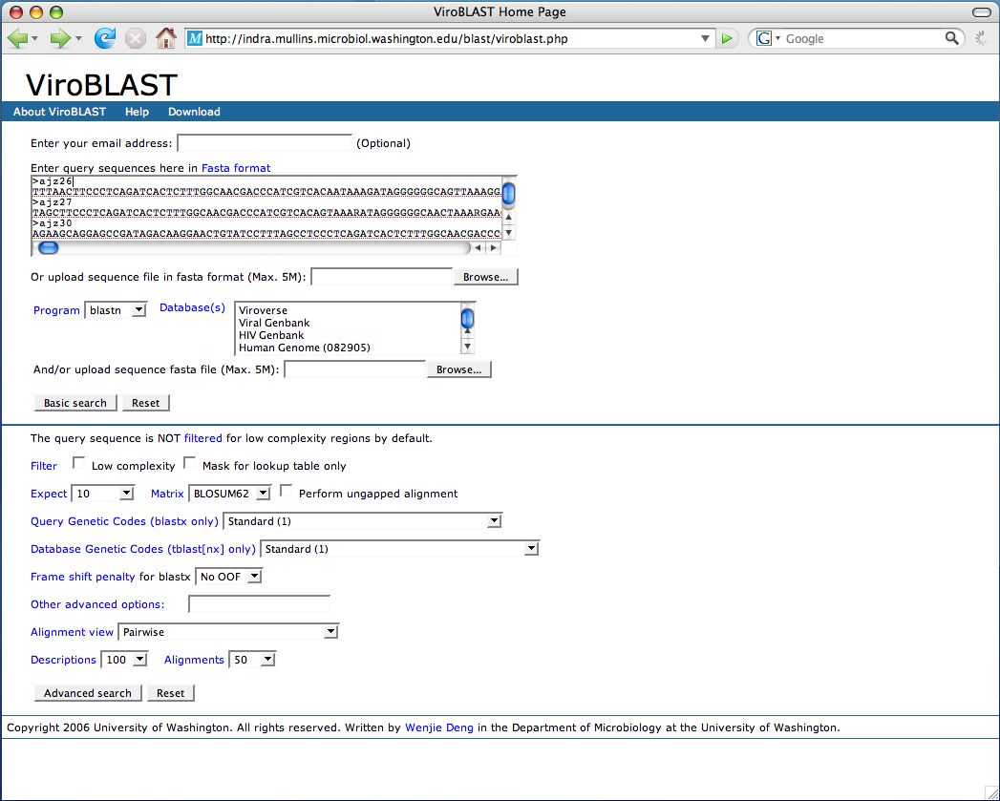
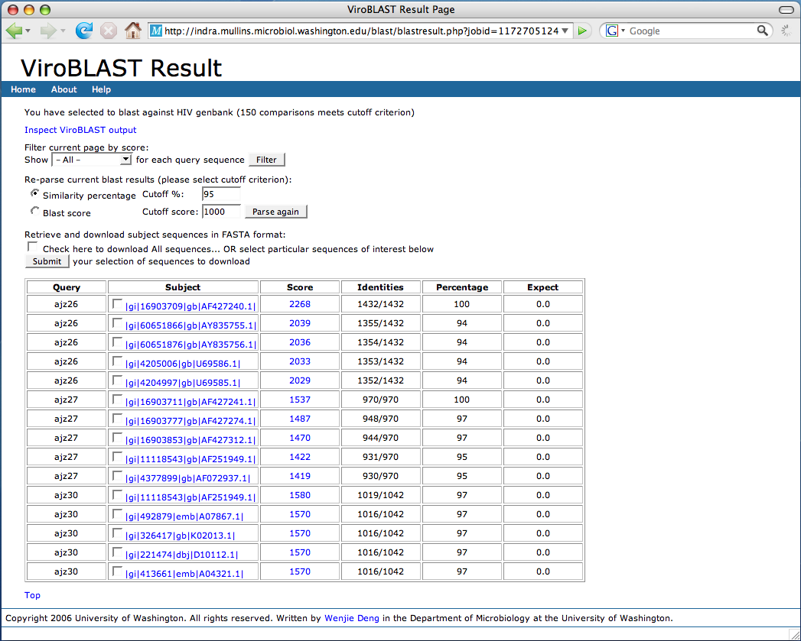
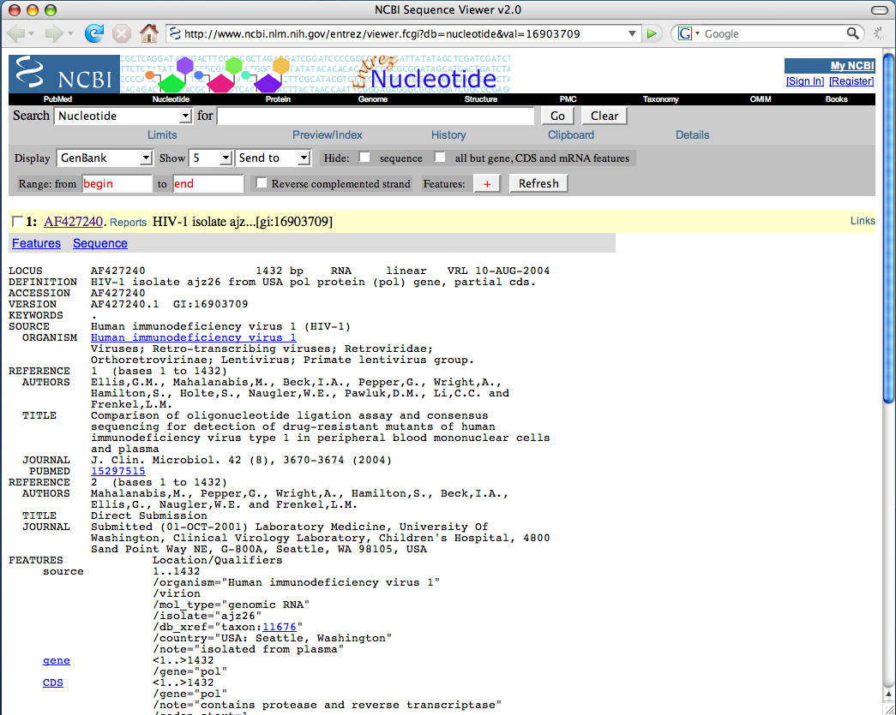
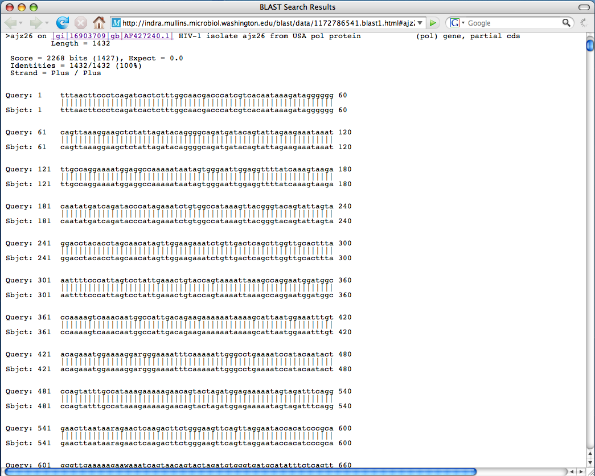
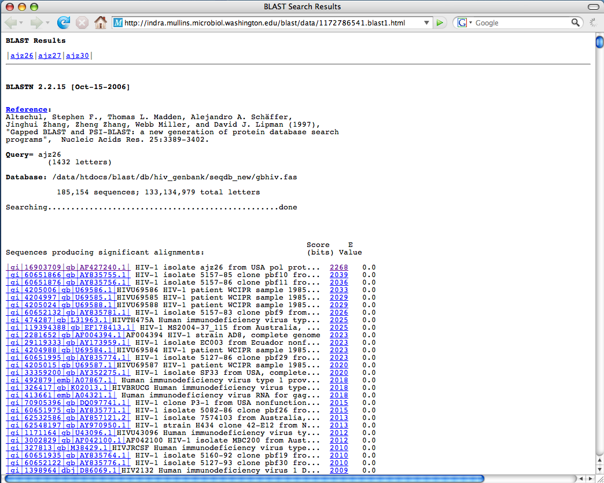
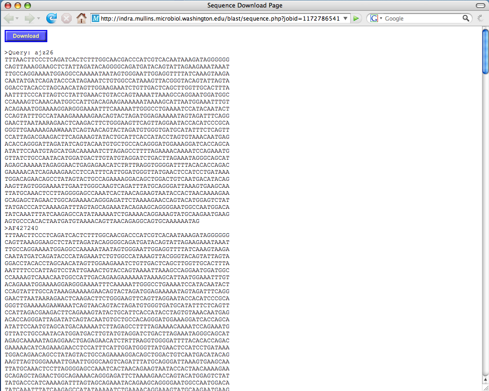

ViroBLAST Help
Steps to start a ViroBLAST search:
- Input your email address if you want to receive result via email (optional).
- Copy and paste multiple query sequences in fasta format to text box, or upload a sequence file in FASTA format.
- Choose a BLAST program and select one or multiple databases to blast against. The databases include lab local sequence database (Viroverse), public sequence databases
or user's own sequence dataset uploaded as a FASTA file.
- Select search features to get more specific information (optional).
- Click "Search" button to start search.

Friendly output to easily parse and navigate the BLAST result.
- User can reset different parameters to filter and parse again the BLAST result.

- Click one of links in Subject field will link to NCBI GenBank report of the subject sequence if applicable.

- Click one of links in Score field will locate the pair-wise alignment between the query sequence and subject sequence in the blast result file.

- Click "Inspect BLAST output" link will open the blast result file. The ViroBLAST automatically divides a big output file into several
small files to allow users downloading files quickly and easily. It also provides links to each query sequence blast result for the
convenience of analysis of results.

- Check the subject sequences to be downloaded or check to download all sequences and click "Submit" button.
Click "Download" button to download aligned sequences to your local computer.
